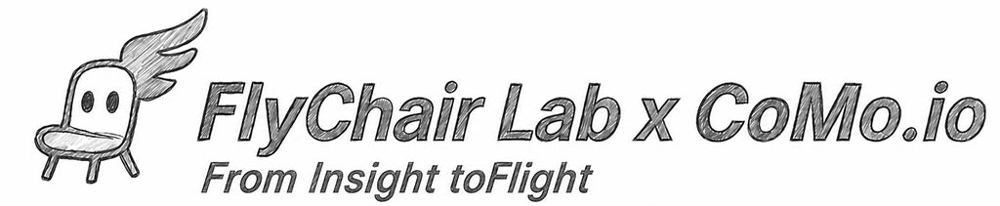

Ben Lee / Shihpin
I help teams transform ideas into validated experiences through product strategy, XR interaction design, AI-assisted workflows, and scalable creative systems.
Dual Track Development
My work is structured around two connected tracks: one focused on consulting and product validation, the other on long-term creative systems and digital craft.
CoMo.io Consulting
Product × XR × AI consulting for teams that need to move from concept to validated experience.
- Product strategy and early-stage concept validation
- XR / interactive experience planning
- AI-assisted workflow design and rapid prototyping
- Creative production structure and outsourcing QC
FlyChair Lab
A long-term creative lab exploring the intersection of craft, technology, AI, and interactive storytelling.
- Digital craft and creative technology experiments
- XR storytelling and immersive experience prototypes
- AI-supported creative systems and reusable assets
- Long-term brand, exhibition, and product development
Core Capabilities
Product & Experience Strategy
Turning ambiguous ideas into structured direction, user value, MVP scope, and decision-ready prototypes.
XR & Interactive Systems
Designing immersive storytelling, interaction flows, spatial experiences, and modular content structures.
AI Workflow Integration
Building AI-assisted pipelines that connect prompts, structured content, visual production, and runtime systems.
Creative QC & Art Direction
Translating senior art direction and outsourcing experience into scalable review standards and production systems.
Frameworks
EDA
Experience-Driven Approach: from experience sensing to validation, simulation, anchoring, and delivery.
AJF
A framework for AI collaboration and judgment externalization, helping creative workers make decision processes visible.
Editor Decoupling
Separating content editing, structured data, and runtime output to make creative systems reusable and scalable.
Vibe Coding Pipeline
A practical prototype pipeline combining product thinking, AI tools, interaction design, and rapid technical validation.
Previous Experience
Starvision
Previous creative leadership and product development experience in game, digital content, and interactive product environments. This background informs my current consulting and creative system work.
Let’s Build Validated Creative Systems
Available for consulting, XR / AI prototype planning, creative workflow design, and product strategy collaboration.
Connect on LinkedIn